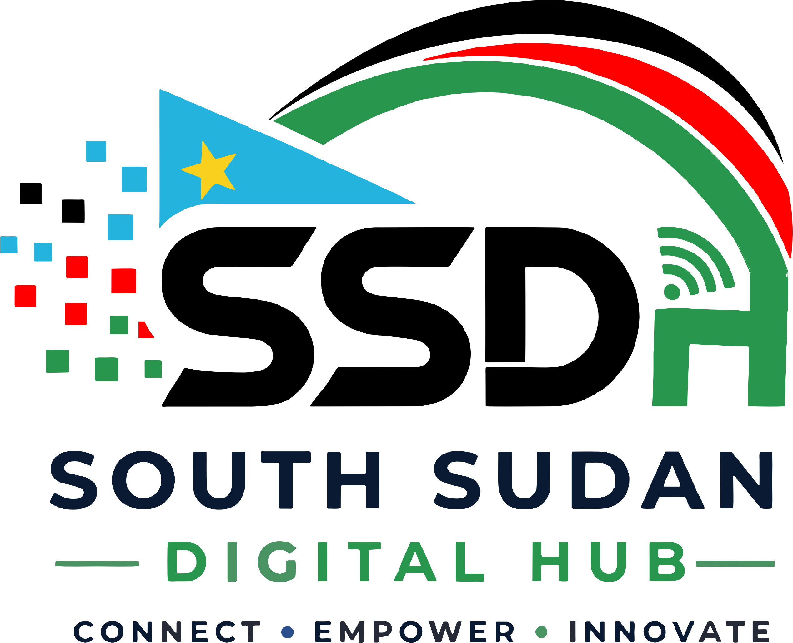

Site Name

South Sudan Digital Hub (SSDH)
South Sudan Digital Hub was selected as the website name because it clearly reflects the mission of promoting technology, digital literacy, innovation, entrepreneurship, and internet connectivity throughout South Sudan. The name is professional, memorable, and suitable for a modern technology-focused platform.
Optional Domain: ssdh.org
Site Purpose
South Sudan Digital Hub serves as an informational platform focused on technology, innovation, entrepreneurship, internet connectivity, and digital opportunities in South Sudan. The website will provide educational resources, information about digital skills, technology initiatives, innovation projects, and online opportunities that help young people participate in the growing digital economy.
Scenarios
- What digital skills should I learn to improve my chances of finding remote work opportunities?
- What internet and technology services are currently available in South Sudan?
- Where can I find technology-related opportunities, resources, and training programs?
- How is innovation helping support economic and technological growth in South Sudan?
Color Schema
Deep Navy
#0F172A
Headers, navigation, footer, major headings
Emerald Green
#10B981
Buttons, links, highlights, interactive elements
Gold Accent
#F59E0B
Statistics, call-to-action sections, emphasis
Light Background
#F8FAFC
Page backgrounds and content sections
Typography
Poppins
Poppins will be used for page headings, navigation menus, section titles, and important visual elements.
Roboto
Roboto will be used for body text, paragraphs, forms, and general website content.